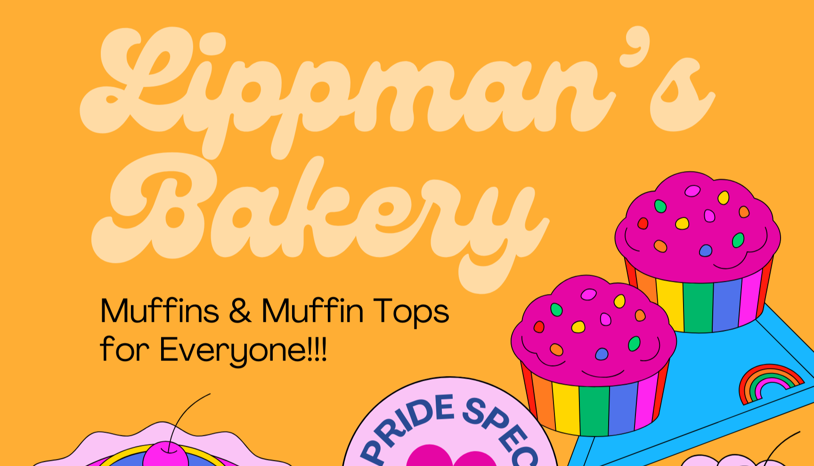
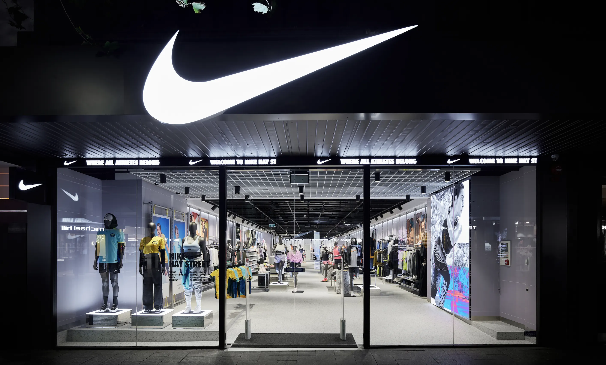

Anmol Narang Portfolio
Welcome! Here to share my passion for data and all the projects I've worked on independently, and as part of various courses. Thanks for stopping by! :D
I am a dedicated individual with a passion for unlocking the potential of data. With a background in Business Insights & Analytics, I thrive on the challenges of analyzing complex datasets to extract valuable insights. My experience spans from enhancing operational efficiency to optimizing sales processes, all with a keen eye on contributing to data-driven business strategies. Outside of work, I enjoy exploring new technologies and methodologies to expand my skill set and stay ahead in the ever-evolving world of data analytics. Let's connect and embark on a journey of exploration and innovation together!
I delved into an airline-related database to perform data profiling and analysis. I explored various aspects such as flight routes, durations, booking patterns, ticket prices, airport insights, aircraft analysis, and customer behavior.
I focused on enhancing the quality and consistency of the Nashville Housing dataset using SQL queries. These SQL transformations aim to create a cleaner and more structured dataset.

I used dynamic pivot tables with filters to streamline and analyze coffee orders and customer data. By leveraging Excel's advanced features, I created a dynamic system that allows for seamless exploration and visualization of coffee-related transactions. This project not only enhances data organization and accessibility but also provides a user-friendly interface for a more insightful understanding of coffee orders and customer dynamics.
This financial model provides a thorough examination of Lippman's Bakery's Income Statement, Balance Sheet, and Cash Flow Statement. The Income Statement describes the bakery's income, costs, and profitability; the Balance Sheet shows its assets, liabilities, and equity; and the Cash Flow Statement analyzes cash inflows and outflows, emphasizing liquidity and operational sustainability.

This Nike Sales Dashboard offers a concise overview of sales performance, showcasing top sales per retailer, total sales per product type, and sales by state. It also displays sales by method and includes trend lines for units sold and total sales, providing valuable insights into key metrics and growth patterns.
